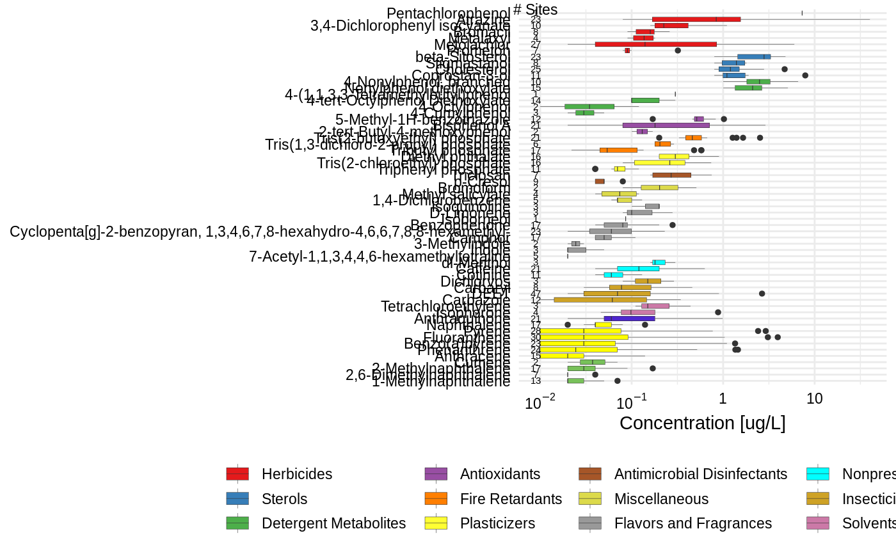

Create concentration summary
get_concentration_summary.RdUse this function to create a chemical_summary, but instead
of using any benchmarks, the EAR column is simply
the concentration. The output of this function can be used
in any of the plotting or table functions in the same way
that the output of get_chemical_summary.
Usage
get_concentration_summary(
tox_list,
chem_data = NULL,
chem_site = NULL,
chem_info = NULL,
tox_names = TRUE
)Arguments
- tox_list
List with data frames for chem_data, chem_info, and chem_site. Created with
create_toxEval.- chem_data
Optional data frame with (at least) columns: CAS, SiteID, and Value. Default is
NULL. The argument will over-ride what is in tox_list.- chem_site
Optional data frame with (at least) columns: SiteID, and Short Name. Default is
NULL. The argument will over-ride what is in tox_list.- chem_info
Optional data frame with (at least) columns: CAS, and class. Default is
NULL. The argument will over-ride what is in tox_list.- tox_names
Logical whether to use the provided chemical names from the ToxCast or not. If there is not a match by CAS, the function will look for a column "Chemical" in the "Chemical" tab. If that column doesn't exist, it will create a (not good!) name.
Value
a data frame with the columns: CAS, chnm (chemical name as a factor), site, date, EAR (which is just concentration), Bio_category, shortName (of site), Class. The output of this function is where you find EAR values for every chemical/endpoint combination.
Examples
path_to_tox <- system.file("extdata", package = "toxEval")
file_name <- "OWC_data_fromSup.xlsx"
full_path <- file.path(path_to_tox, file_name)
tox_list <- create_toxEval(full_path)
chemical_summary_conc <- get_concentration_summary(tox_list)
head(chemical_summary_conc)
#> # A tibble: 6 × 9
#> CAS site EAR date Bio_c…¹ endPo…² short…³ Class chnm
#> <chr> <chr> <dbl> <dttm> <chr> <chr> <chr> <fct> <fct>
#> 1 21145-77-7 USGS… 0 2012-07-12 11:00:00 Concen… Concen… Oswego Flav… Tona…
#> 2 57837-19-1 USGS… 0 2011-03-15 10:35:00 Concen… Concen… StLouis Herb… Meta…
#> 3 57837-19-1 USGS… 0.11 2011-05-01 13:00:00 Concen… Concen… StLouis Herb… Meta…
#> 4 57837-19-1 USGS… 0.09 2011-06-28 14:15:00 Concen… Concen… Maumee Herb… Meta…
#> 5 57837-19-1 USGS… 0.17 2012-05-07 09:23:00 Concen… Concen… Maumee Herb… Meta…
#> 6 57837-19-1 USGS… 0.12 2012-05-22 15:30:00 Concen… Concen… Maumee Herb… Meta…
#> # … with abbreviated variable names ¹Bio_category, ²endPoint, ³shortName
plot_tox_boxplots(chemical_summary_conc,
category = "Chemical",
x_label = "Concentration [ug/L]"
)
